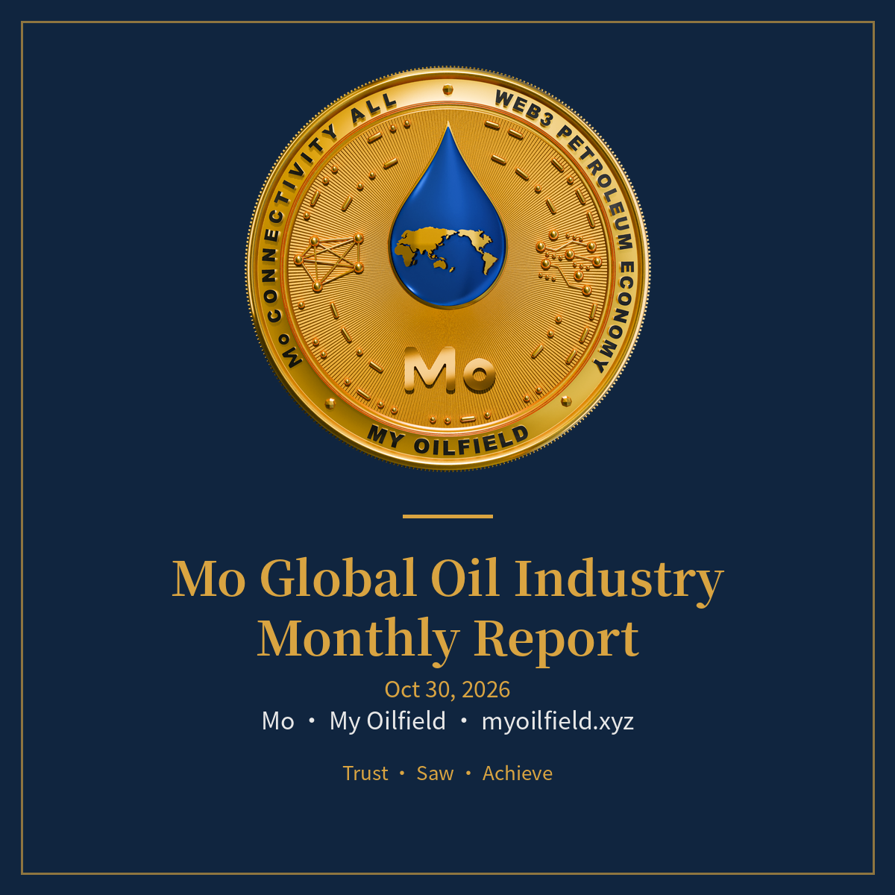

Publications of the Mo journal system (English edition): facts and general market analysis only. Mo's own operational content is in the internal Mo Briefing and is not published here. Chinese edition: Mo-Reports-CN.
Published on the last calendar day of each month, 08:00 Beijing time. First half: upstream panorama; second half: downstream macro analysis.
Upstream: panorama of producing countries, reserves and R/P ratios, wells and rigs, world-class fields, oilfield services, infrastructure, projects under development, fields and blocks seeking investors, OPEC / OPEC+ / IEA, supply, demand and trade, trends and competition, Chad and Canada features.
Downstream: oil consumption structure, transport fuels, petrochemicals and fibres, fertilisers and pesticides, pharma and daily chemicals, food and packaging, industry output, Mo and the downstream.
Published every Sunday, 20:00 Beijing time: production and rig changes, price trends, OPEC dynamics, the week's major events, outlook. First issue November 15, 2026.